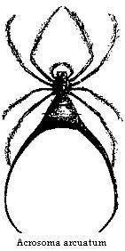

Religious Holidays — Marmoset Monkeys — Serpents — Insects
Before leaving the subject of Pará, where I resided, as already stated, in all eighteen months, it will be necessary to give a more detailed account of several matters connected with the customs of the people and the Natural History of the neighbourhood, which have hitherto been only briefly mentioned. I reserve an account of the trade and improved condition of Pará in 1859 for the end of this narrative.
During the first few weeks of our stay, many of those religious festivals took place, which occupied so large a share of the time and thoughts of the people. These were splendid affairs, wherein artistically-arranged processions through the streets, accompanied by thousands of people, military displays, the clatter of fireworks, and the clang of military music, were super-added to pompous religious services in the churches. To those who had witnessed similar ceremonies in the Southern countries of Europe, there would be nothing remarkable perhaps in these doings, except their taking place amidst the splendours of tropical nature; but to me they were full of novelty, and were besides interesting as exhibiting much that was peculiar in the manners of the people. The festivals celebrate either the anniversaries of events concerning saints, or those of the more important transactions in the life of Christ. To them have been added, since the Independence, many gala days connected with the events in the Brazilian national history; but these have all a semi-religious character. The holidays had become so numerous, and interfered so much with trade and industry towards the year 1852, that the Brazilian Government was obliged to reduce them; obtaining the necessary permission from Rome to abolish several which were of minor importance. Many of those which have been retained are declining in importance since the introduction of railways and steamboats, and the increased devotion of the people to commerce; at the time of our arrival, however, they were in full glory. The way they were managed was in this fashion. A general manager or “Juiz” for each festival was elected by lot every year in the vestry of the church, and to him were handed over all the paraphernalia pertaining to the particular festival which he was chosen to manage; the image of the saint, the banners, silver crowns and so forth. He then employed a number of people to go the round of the parish, and collect alms towards defraying the expenses. It was considered that the greater the amount of money spent in wax candles, fireworks, music and feasting, the greater the honour done to the saint. If the Juiz was a rich man, he seldom sent out alms-gatherers, but celebrated the whole affair at his own expense, which was sometimes to the extent of several hundred pounds. Each festival lasted nine days (a novena), and in many cases refreshments for the public were provided every evening. In the smaller towns a ball took place two or three evenings during the novena, and on the last day there was a grand dinner. The priest, of course, had to be paid very liberally, especially for the sermon delivered on the Saint’s-day or termination of the festival, sermons being extra duty in Brazil.
There was much difference as to the accessories of these festivals between the interior towns and villages and the capital; but little or no work was done anywhere whilst they lasted, and they tended much to demoralise the people. It was soon perceived that religion is rather the amusement of the Paráenses, than their serious exercise. The ideas of the majority evidently do not reach beyond the belief that all the proceedings are, in each case, in honour of the particular wooden image enshrined at the church. The uneducated Portuguese immigrants seemed to me to have very degrading notions of religion. I have often travelled in the company of these shining examples of European enlightenment. They generally carry with them, wherever they go, a small image of some favourite saint in their trunks, and when a squall or any other danger arises, their first impulse is to rush to the cabin, take out the image and clasp it to their lips, whilst uttering a prayer for protection. The negroes and mulattos are similar in this respect to the low Portuguese, but I think they show a purer devotional feeling; and in conversation, I have always found them to be more rational in religious views than the lower orders of Portuguese. As to the Indians; with the exception of the more civilised families residing near the large towns, they exhibit no religious sentiment at all. They have their own patron saint, St. Thomé, and celebrate his anniversary in the orthodox way, for they are fond of observing all the formalities; but they think the feasting to be of equal importance with the church ceremonies. At some of the festivals, masquerading forms a large part of the proceedings, and then the Indians really shine. They get up capital imitations of wild animals, dress themselves to represent the Caypor and other fabulous creatures of the forest, and act their parts throughout with great cleverness. When St. Thome’s festival takes place, every employer of Indians knows that all his men will get drunk. The Indian, generally too shy to ask directly for cashaca (rum), is then very bold; he asks for a frasco at once (two-and-a-half bottles), and says, if interrogated, that he is going to fuddle in honour of St. Thomé.
In the city of Pará, the provincial government assists to augment the splendour of the religious holidays. The processions which traverse the principal streets consist, in the first place, of the image of the saint, and those of several other subordinate ones belonging to the same church; these are borne on the shoulders of respectable householders, who volunteer for the purpose: sometimes you will see your neighbour the grocer or the carpenter groaning under the load. The priest and his crowd of attendants precede the images, arrayed in embroidered robes, and protected by magnificent sunshades—no useless ornament here, for the heat is very great when the sun is not obscured. On each side of the long line the citizens walk, clad in crimson silk cloaks and holding each a large lighted wax candle. Behind follows a regiment or two of foot soldiers with their bands of music, and last of all the crowd: the coloured people being cleanly dressed and preserving a grave demeanour. The women are always in great force, their luxuriant black hair decorated with jasmines, white orchids and other tropical flowers. They are dressed in their usual holiday attire, gauze chemises and black silk petticoats; their necks are adorned with links of gold beads, which when they are slaves are generally the property of their mistresses, who love thus to display their wealth.
At night, when festivals are going on in the grassy squares around the suburban churches, there is really much to admire. A great deal that is peculiar in the land and the life of its inhabitants can be seen best at those times. The cheerful white church is brilliantly lighted up, and the music, not of a very solemn description, peals forth from the open windows and doors. Numbers of young gaudily-dressed negresses line the path to the church doors with stands of liqueurs, sweetmeats, and cigarettes, which they sell to the outsiders. A short distance off is heard the rattle of dice-boxes and roulette at the open-air gambling-stalls. When the festival happens on moonlit nights, the whole scene is very striking to a newcomer. Around the square are groups of tall palm trees, and beyond it, over the illuminated houses, appear the thick groves of mangoes near the suburban avenues, from which comes the perpetual ringing din of insect life. The soft tropical moonlight lends a wonderful charm to the whole. The inhabitants are all out, dressed in their best. The upper classes, who come to enjoy the fine evening and the general cheerfulness, are seated on chairs around the doors of friendly houses. There is no boisterous conviviality, but a quiet enjoyment seems to be felt everywhere, and a gentle courtesy rules amongst all classes and colours. I have seen a splendidly-dressed colonel, from the President’s palace, walk up to a mulatto, and politely ask his permission to take a light from his cigar. When the service is over, the church bells are set ringing, a shower of rockets mounts upwards, the bands strike up, and parties of coloured people in the booths begin their dances. About ten o’clock the Brazilian national air is played, and all disperse quietly and soberly to their homes.
At the festival of Corpus Christi, there was a very pretty arrangement. The large green square of the Trinidade was lighted up all round with bonfires. On one side a fine pavilion was erected, the upright posts consisting of real fan-leaved palm trees—the Mauritia flexuosa, which had been brought from the forest, stems and heads entire, and fixed in the ground. The booth was illuminated with coloured lamps, and lined with red and white cloth. In it were seated the ladies, not all of pure Caucasian blood, but presenting a fine sample of Pará beauty and fashion.
The grandest of all these festivals is that held in honour of Our Lady of Nazareth: it is, I believe, peculiar to Pará. As I have said before, it falls in the second quarter of the moon, about the middle of the dry season—that is, in October or November—and lasts, like the others, nine days. On the first day, a very extensive procession takes place, starting from the Cathedral, whither the image of the saint had been conveyed some days previous, and terminating at the chapel or hermitage, as it is called, of the saint at Nazareth, a distance of more than two miles. The whole population turns out on this occasion. All the soldiers, both of the line and the National Guard, take part in it, each battalion accompanied by its band of music. The civil authorities, also, with the President at their head, and the principal citizens, including many of the foreign residents, join in the line. The boat of the shipwrecked Portuguese vessel is carried after the saint on the shoulders of officers or men of the Brazilian navy, and along with it are borne the other symbols of the miracles which Our Lady is supposed to have performed. The procession starts soon after the sun’s heat begins to moderate—that is, about half-past four o’clock in the afternoon. When the image is deposited in the chapel the festival is considered to be inaugurated, and the village every evening becomes the resort of the pleasure-loving population, the holiday portion of the programme being preceded, of course, by a religious service in the chapel. The aspect of the place is then that of a fair, without the humour and fun, but, at the same time, without the noise and coarseness of similar holidays in England. Large rooms are set apart for panoramic and other exhibitions, to which the public is admitted gratis. In the course of each evening, large displays of fireworks take place, all arranged according to a published programme of the festival.
The various ceremonies which take place during Lent seemed to me the most impressive, and some of them were exceedingly well- arranged. The people, both performers and spectators, conduct themselves with more gravity on these occasions, and there is no holiday-making. Performances, representing the last events in the life of Christ, are enacted in the churches or streets in such a way as to remind one of the old miracle plays or mysteries. A few days before Good Friday, a torchlight procession takes place by night from one church to another, in which is carried a large wooden image of Christ bent under the weight of the cross. The chief members of the government assist, and the whole slowly moves to the sound of muffled drums. A double procession is managed a few days afterwards. The image of St. Mary is carried in one direction, and that of the Saviour in another. The two images meet in the middle of one of the most beautiful of the churches, which is previously filled to excess with the multitudes anxious to witness the affecting meeting of mother and son a few days before the crucifixion. The images are brought face to face in the middle of the church, the crowd falls prostrate, and a lachrymose sermon is delivered from the pulpit. The whole thing, as well as many other spectacles arranged during the few succeeding days, is highly theatrical and well calculated to excite the religious emotions of the people, although, perhaps, only temporarily. On Good Friday the bells do not ring, all musical sounds are interdicted, and the hours, night and day, are announced by the dismal noise of wooden clappers, wielded by negroes stationed near the different churches. A sermon is delivered in each church. In the middle of it, a scroll is suddenly unfolded from the pulpit, upon which is an exaggerated picture of the bleeding Christ. This act is accompanied by loud groans, which come from stout-lunged individuals concealed in the vestry and engaged for the purpose. The priest becomes greatly excited, and actually sheds tears. On one of these occasions I squeezed myself into the crowd, and watched the effect of the spectacle on the audience. Old Portuguese men and Brazilian women seemed very much affected—sobbing, beating their breasts, and telling their beads. The negroes themselves behaved with great propriety, but seemed moved more particularly by the pomp, the gilding, the dresses, and the general display. Young Brazilians laughed. Several aborigines were there, coolly looking on. One old Indian, who was standing near me, said, in a derisive manner, when the sermon was over: “It’s all very good; better it could not be” (Está todo bom; melhor nao pude ser).
The negroes of Pará are very devout. They have built, by slow degrees, as I was told, a fine church by their own unaided exertions. It is called Nossa Senhora do Rosario, or Our Lady of the Rosary. During the first weeks of our residence at Pará, I frequently observed a line of negroes and negresses, late at night, marching along the streets, singing a chorus. Each carried on his or her head a quantity of building materials—stones, bricks, mortar, or planks. I found they were chiefly slaves, who, after their hard day’s work, were contributing a little towards the construction of their church. The materials had all been purchased by their own savings. The interior was finished about a year afterwards, and is decorated, I thought, quite as superbly as the other churches which were constructed, with far larger means, by the old religious orders more than a century ago. Annually, the negroes celebrate the festival of Nossa Senhora do Rosario, and generally make it a complete success.
I will now add a few more notes which I have accumulated on the subject of the natural history, and then we shall have done, for the present, with Pará and its neighbourhood.
I have already mentioned that monkeys were rare in the immediate vicinity of Pará. I met with only three species in the forest near the city; they are shy animals, and avoid the neighbourhood of towns, where they are subject to much persecution by the inhabitants, who kill them for food. The only kind which I saw frequently was the little Midas ursulus, one of the Marmosets, a family peculiar to tropical America, and differing in many essential points of structure and habits from all other apes. They are small in size, and more like squirrels than true monkeys in their manner of climbing. The nails, except those of the hind thumbs, are long and claw-shaped like those of squirrels, and the thumbs of the fore extremities, or hands, are not opposable to the other fingers. I do not mean to imply that they have a near relationship to squirrels, which belong to the Rodents, an inferior order of mammals; their resemblance to those animals is merely a superficial one. They have two molar teeth less in each jaw than the Cebidæ, the other family of American monkeys; they agree with them, however, in the sideway position of the nostrils, a character which distinguishes both from all the monkeys of the old world. The body is long and slender, clothed with soft hairs, and the tail, which is nearly twice the length of the trunk, is not prehensile. The hind limbs are much larger in volume than the anterior pair. The Midas ursulus is never seen in large flocks; three or four is the greatest number observed together. It seems to be less afraid of the neighbourhood of man than any other monkey. I sometimes saw it in the woods which border the suburban streets, and once I espied two individuals in a thicket behind the English consul’s house at Nazareth. Its mode of progression along the main boughs of the lofty trees is like that of the squirrel; it does not ascend to the slender branches, or take those wonderful flying leaps which the Cebidæ do, whose prehensile tails and flexible hands fit them for such headlong travelling. It confines itself to the larger boughs and trunks of trees, the long nails being of great assistance to the creature, enabling it to cling securely to the bark, and it is often seen passing rapidly around the perpendicular cylindrical trunks. It is a quick, restless, timid little creature, and has a great share of curiosity, for when a person passes by under the trees along which a flock is running, they always stop for a few moments to have a stare at the intruder. In Pará, Midas ursulus is often seen in a tame state in the houses of the inhabitants. When full grown it is about nine inches long, independently of the tail, which measures fifteen inches. The fur is thick, and black in colour, with the exception of a reddish-brown streak down the middle of the back. When first taken, or when kept tied up, it is very timid and irritable. It will not allow itself to be approached, but keeps retreating backwards when any one attempts to coax it. It is always in a querulous humour, uttering a twittering, complaining noise; its dark, watchful eyes are expressive of distrust, and observant of every movement which takes place near it. When treated kindly, however, as it generally is in the houses of the natives, it becomes very tame and familiar. I once saw one as playful as a kitten, running about the house after the negro children, who fondled it to their hearts’ content. It acted somewhat differently towards strangers, and seemed not to like them to sit in the hammock which was slung in the room, leaping up, trying to bite, and otherwise annoying them. It is generally fed sweet fruits, such as the banana; but it is also fond of insects, especially soft-bodied spiders and grasshoppers, which it will snap up with eagerness when within reach. The expression of countenance in these small monkeys is intelligent and pleasing. This is partly owing to the open facial angle, which is given as one of 60°; but the quick movements of the head, and the way they have of inclining it to one side when their curiosity is excited, contribute very much to give them a knowing expression.
On the Upper Amazons I once saw a tame individual of the Midas leoninus, a species first described by Humboldt, which was still more playful and intelligent than the one just described. This rare and beautiful little monkey is only seven inches in length, exclusive of the tail. It is named leoninus on account of the long brown mane which depends from the neck, and which gives it very much the appearance of a diminutive lion. In the house where it was kept, it was familiar with everyone; its greatest pleasure seeming to be to climb about the bodies of different persons who entered. The first time I went in, it ran across the room straightway to the chair on which I had sat down, and climbed up to my shoulder; having arrived there, it turned round and looked into my face, showing its little teeth and chattering, as though it would say, “Well, and how do you do?” It showed more affection towards its master than towards strangers, and would climb up to his head a dozen times in the course of an hour, making a great show every time of searching there for certain animalcula. Isidore Geoffroy St. Hilaire relates of a species of this genus, that it distinguished between different objects depicted on an engraving. M. Audouin showed it the portraits of a cat and a wasp; at these it became much terrified; whereas, at the sight of a figure of a grasshopper or beetle, it precipitated itself on the picture, as if to seize the objects there represented.
Although monkeys are now rare in a wild state near Pará, a great number may be seen semi-domesticated in the city. The Brazilians are fond of pet animals. Monkeys, however, have not been known to breed in captivity in this country. I counted, in a short time, thirteen different species, whilst walking about the Pará streets, either at the doors or windows of houses, or in the native canoes. Two of them I did not meet with afterwards in any other part of the country. One of these was the well-known Hapale Jacchus, a little creature resembling a kitten, banded with black and grey all over the body and tail, and having a fringe of long white hairs surrounding the ears. It was seated on the shoulder of a young mulatto girl, as she was walking along the street, and I was told had been captured in the island of Marajo. The other was a species of Cebus, with a remarkably large head. It had ruddy-brown fur, paler on the face, but presenting a blackish tuft on the top of the forehead.
In the wet season serpents are common in the neighbourhood of Pará. One morning, in April, 1849, after a night of deluging rain, the lamplighter, on his rounds to extinguish the lamps, woke me up to show me a boa-constrictor he had just killed in the Rua St. Antonio, not far from my door. He had cut it nearly in two with a large knife, as it was making its way down the sandy street. Sometimes the native hunters capture boa- constrictors alive in the forest near the city. We bought one which had been taken in this way, and kept it for some time in a large box under our verandah. This is not, however, the largest or most formidable serpent found in the Amazons region. It is far inferior, in these respects, to the hideous Sucurujú, or Water Boa (Eunectes murinus), which sometimes attacks man; but of this I shall have to give an account in a subsequent chapter.
It frequently happened, in passing through the thickets, that a snake would fall from the boughs close to me. Once for a few moments I got completely entangled in the folds of one, a wonderfully slender kind, being nearly six feet in length, and not more than half an inch in diameter at its broadest part. It was a species of Dryophis. The majority of the snakes seen were innocuous. One day, however, I trod on the tail of a young serpent belonging to a very poisonous kind, the Jararaca (Craspedocephalus atrox). It turned round and bit my trousers; and a young Indian lad, who was behind me, dexterously cut it through with his knife before it had time to free itself. In some seasons snakes are very abundant, and it often struck me as strange that accidents did not occur more frequently than was the case.
Amongst the most curious snakes found here were the Amphisbænæ, a genus allied to the slow-worm of Europe. Several species occur at Pará. Those brought to me were generally not much more than a foot in length. They are of cylindrical shape, having, properly speaking, no neck, and the blunt tail which is only about an inch in length, is of the same shape as the head. This peculiar form, added to their habit of wriggling backwards as well as forwards, has given rise to the fable that they have two heads, one at each extremity. They are extremely sluggish in their motions, and are clothed with scales that have the form of small imbedded plates arranged in rings round the body. The eye is so small as to be scarcely perceptible. They live habitually in the subterranean chambers of the Saüba ant; only coming out of their abodes occasionally in the night time. The natives call the Amphisbæna the “Mai das Saübas,” or Mother of the Saübas, and believe it to be poisonous, although it is perfectly harmless. It is one of the many curious animals which have become the subject of mythical stories with the natives. They say the ants treat it with great affection, and that if the snake be taken away from a nest, the Saübas will forsake the spot. I once took one quite whole out of the body of a young Jararaca, the poisonous species already alluded to, whose body was so distended with its contents that the skin was stretched out to a film over the contained Amphisbæna. I was, unfortunately, not able to ascertain the exact relation which subsists between these curious snakes and the Saüba ants. I believe however, they feed upon the Saübas, for I once found remains of ants in the stomach of one of them. Their motions are quite peculiar; the undilatable jaws, small eyes and curious plated integument also distinguish them from other snakes. These properties have evidently some relation to their residence in the subterranean abodes of ants. It is now well ascertained by naturalists, that some of the most anomalous forms amongst Coleopterous insects are those which live solely in the nests of ants, and it is curious that an abnormal form of snakes should also be found in the society of these insects.
The neighbourhood of Pará is rich in insects. I do not speak of the number of individuals, which is probably less than one meets with, excepting ants and termites, in summer days in temperate latitudes; but the variety, or in other words, the number of species, is very great. It will convey some idea of the diversity of butterflies when I mention that about 700 species of that tribe are found within an hour’s walk of the town; whilst the total number found in the British Islands does not exceed 66, and the whole of Europe supports only 321. Some of the most showy species, such as the swallow-tailed kinds, Papilio Polycaon, Thoas, Torquatus, and others, are seen flying about the streets and gardens; sometimes they come through the open windows, attracted by flowers in the apartments. Those species of Papilio which are most characteristic of the country, so conspicuous in their velvety-black, green, and rose-coloured hues, which Linnæus, in pursuance of his elegant system of nomenclature—naming the different kinds after the heroes of Greek mythology—called Trojans, never leave the shades of the forest. The splendid metallic blue Morphos, some of which measure seven inches in expanse, are generally confined to the shady alleys of the forest. They sometimes come forth into the broad sunlight. When we first went to look at our new residence in Nazareth, a Morpho Menelaus, one of the most beautiful kinds, was seen flapping its huge wings like a bird along the verandah. This species, however, although much admired, looks dull in colour by the side of its congener, the Morpho Rhetenor, whose wings, on the upper face, are of quite a dazzling lustre. Rhetenor usually prefers the broad sunny roads in the forest, and is an almost unattainable prize, on account of its lofty flight, for it very rarely descends nearer the ground than about twenty feet. When it comes sailing along, it occasionally flaps its wings, and then the blue surface flashes in the sunlight, so that it is visible a quarter of a mile off. There is another species of this genus, of a satiny-white hue, the Morpho Uraneis; this is equally difficult to obtain; the male only has the satiny lustre, the female being of a pale-lavender colour. It is in the height of the dry season that the greatest number and variety of butterflies are found in the woods; especially when a shower falls at intervals of a few days. An infinite number of curious and rare species may then be taken, most diversified in habits, mode of flight, colours, and markings: some yellow, others bright red, green, purple, and blue, and many bordered or spangled with metallic lines and spots of a silvery or golden lustre. Some have wings transparent as glass; one of these clear wings is especially beautiful, namely, the Hetaira Esmeralda. It has one spot only of opaque colouring on its wings, which is of a violet and rose hue; this is the only part visible when the insect is flying low over dead leaves in the gloomy shades where alone it is found, and it then looks like a wandering petal of a flower.
Bees and wasps are not especially numerous near Pará, and I will reserve an account of their habits for a future chapter. Many species of Mygale, those monstrous hairy spiders, half a foot in expanse, which attract the attention so much in museums, are found in sandy places at Nazareth. The different kinds have the most diversified habits. Some construct, amongst the tiles or thatch of houses, dens of closely-woven web, which, in its texture, very much resembles fine muslin; these are often seen crawling over the walls of apartments. Others build similar nests in trees, and are known to attack birds. One very robust fellow, the Mygale Blondii, burrows into the earth, forming a broad, slanting gallery, about two feet long, the sides of which he lines beautifully with silk. He is nocturnal in his habits. Just before sunset he may be seen keeping watch within the mouth of his tunnel, disappearing suddenly when he hears a heavy foot-tread near his hiding place. The number of spiders ornamented with showy colours was somewhat remarkable. Some double themselves up at the base of leaf-stalks, so as to resemble flower-buds, and thus deceive the insects on which they prey. The most extraordinary-looking spider was a species of Acrosoma, which had two curved bronze-coloured spines, an inch and a half in length, proceeding from the tip of its abdomen. It spins a large web, the monstrous appendages being apparently no impediment to it in its work; but what their use can be I am unable to divine.
Coleoptera, or beetles, at first seemed to be very scarce. This apparent scarcity has been noticed in other equatorial countries, and arises, probably, from the great heat of the sun not permitting them to exist in exposed situations, where they form such conspicuous objects in Europe. Many hundred species of the different families can be found when they are patiently searched for in the shady places to which they are confined. It is vain to look for the Geodephaga, or carnivorous beetles, under stones, or anywhere, indeed, in open, sunny places. The terrestrial forms of this interesting family, which abound in England and temperate countries generally, are scarce in the neighbourhood of Pará; in fact, I met with only four or five species; on the other hand, the purely arboreal kinds were rather numerous. The contrary of this happens in northern latitudes, where the great majority of the species and genera are exclusively terrestrial. The arboreal forms are distinguished by the structure of the feet, which have broad spongy soles and toothed claws, enabling them to climb over and cling to branches and leaves. The remarkable scarcity of ground beetles is, doubtless, attributable to the number of ants and Termites which people every inch of surface in all shady places, and which would most likely destroy the larvæ of Coleoptera. Moreover, these active creatures have the same functions as Coleoptera, and thus render their existence unnecessary. The large proportion of climbing forms of carnivorous beetles is an interesting fact, because it affords another instance of the arboreal character which animal forms tend to assume in equinoctial America, a circumstance which points to the slow adaptation of the fauna to a forest-clad country throughout an immense lapse of geological time.